File: 000840.gt.txt (if the image is defective, simply delete all Arabic text and the line will be excluded)
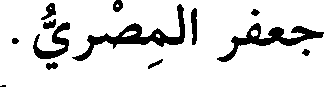
جعفر المصري.
File: 000841.gt.txt (if the image is defective, simply delete all Arabic text and the line will be excluded)
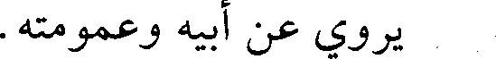
يروي عن أبيه وعمومته.
File: 000842.gt.txt (if the image is defective, simply delete all Arabic text and the line will be excluded)
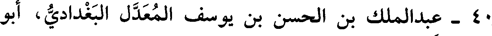
40 - عبدالملك بن الحسن بن يوسف المعدل البغدادي، أبو
File: 000843.gt.txt (if the image is defective, simply delete all Arabic text and the line will be excluded)
عمرو ابن السقطي.
File: 000844.gt.txt (if the image is defective, simply delete all Arabic text and the line will be excluded)
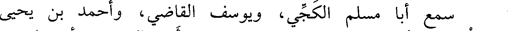
سمع أبا مسلم الكجي، ويوسف القاضي، وأحمد بن يحيى
File: 000845.gt.txt (if the image is defective, simply delete all Arabic text and the line will be excluded)
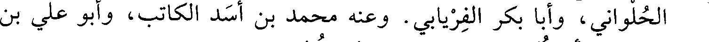
الحلواني، وأبا بكر الفريابي. وعنه محمد بن أسد الكاتب، وأبو علي بن
File: 000846.gt.txt (if the image is defective, simply delete all Arabic text and the line will be excluded)
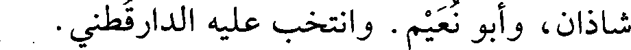
شاذان، وأبو نعيم. وانتخب عليه الدارقطني.
File: 000847.gt.txt (if the image is defective, simply delete all Arabic text and the line will be excluded)
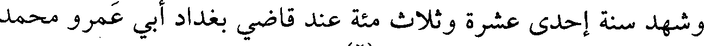
وشهد سنة إحدى عشرة وثلاث مئة عند قاضي بغداد أبي عمرو محمد
File: 000848.gt.txt (if the image is defective, simply delete all Arabic text and the line will be excluded)
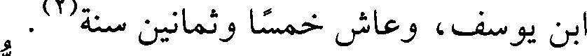
ابن يوسف، وعاش خمسا وثمانين سنة(2) .
File: 000849.gt.txt (if the image is defective, simply delete all Arabic text and the line will be excluded)
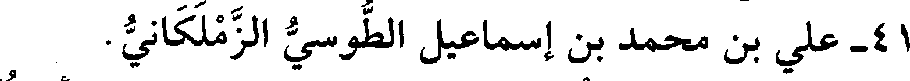
41 - علي بن محمد بن إسماعيل الطوسي الزملكاني.
File: 000850.gt.txt (if the image is defective, simply delete all Arabic text and the line will be excluded)
سمع الباغندي، وابن خزيمة، وجماهير. وعنه الحاكم، وأبو نعيم.
File: 000851.gt.txt (if the image is defective, simply delete all Arabic text and the line will be excluded)
توفي بمكة.
File: 000852.gt.txt (if the image is defective, simply delete all Arabic text and the line will be excluded)
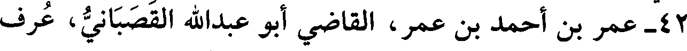
42 - عمر بن أحمد بن عمر، القاضي أبوعبد الله القصباني، عرف
File: 000853.gt.txt (if the image is defective, simply delete all Arabic text and the line will be excluded)
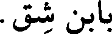
بابن شق.
File: 000854.gt.txt (if the image is defective, simply delete all Arabic text and the line will be excluded)
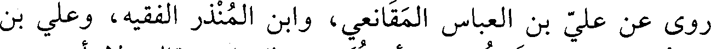
روى عن علي بن العباس المقانعي، وابن المنذر الفقيه، وعلي بن
File: 000855.gt.txt (if the image is defective, simply delete all Arabic text and the line will be excluded)
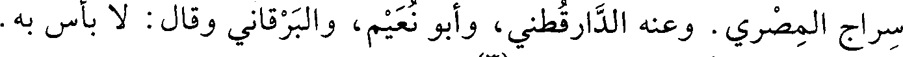
سراج المصري. وعنه الدارقطني، وأبو نعيم، والبرقاني وقال: لا بأس به.
File: 000856.gt.txt (if the image is defective, simply delete all Arabic text and the line will be excluded)
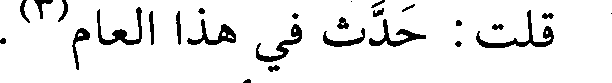
قلت : حدث في هذا العام(3) .
File: 000857.gt.txt (if the image is defective, simply delete all Arabic text and the line will be excluded)
43 - عمرو بن أحمد بن محمد بن الحسن، أبو أحمد الإستراباذي
File: 000858.gt.txt (if the image is defective, simply delete all Arabic text and the line will be excluded)
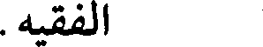
الفقيه.
File: 000859.gt.txt (if the image is defective, simply delete all Arabic text and the line will be excluded)
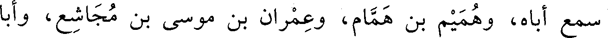
سمع أباه، وهميم بن همام، وعمران بن موسى بن مجاشع، وأبا
File: 000860.gt.txt (if the image is defective, simply delete all Arabic text and the line will be excluded)
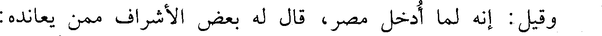
وقيل : إنه لما أدخل مصر، قال له بعض الأشراف ممن يعانده:
File: 000861.gt.txt (if the image is defective, simply delete all Arabic text and the line will be excluded)
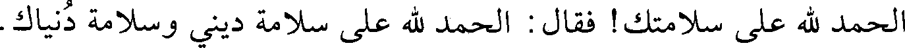
الحمد لله على سلامتك! فقال : الحمد لله على سلامة ديني وسلامة دنياك.
File: 000862.gt.txt (if the image is defective, simply delete all Arabic text and the line will be excluded)
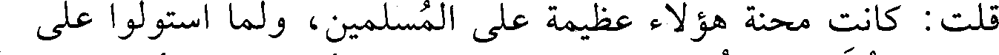
قلت : كانت محنة هؤلاء عظيمة على المسلمين، ولما استولوا على
File: 000863.gt.txt (if the image is defective, simply delete all Arabic text and the line will be excluded)
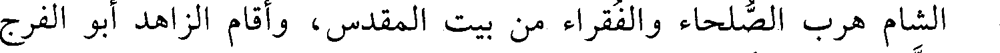
الشام هرب الصلحاء والفقراء من بيت المقدس، وأقام الزاهد أبو الفرج
File: 000864.gt.txt (if the image is defective, simply delete all Arabic text and the line will be excluded)
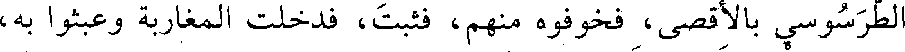
الطرسوسي بالأقصى، فخوفوه منهم، فثبت، فدخلت المغاربة وعبثوا به،
File: 000865.gt.txt (if the image is defective, simply delete all Arabic text and the line will be excluded)
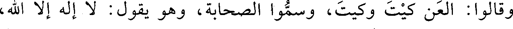
وقالوا : العن كيت وكيت، وسموا الصحابة، وهو يقول : لا إله إلا الله،
File: 000866.gt.txt (if the image is defective, simply delete all Arabic text and the line will be excluded)
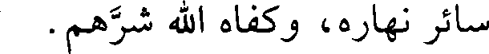
سائر نهاره، وكفاه الله شرهم.
File: 000867.gt.txt (if the image is defective, simply delete all Arabic text and the line will be excluded)
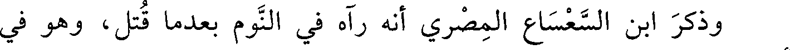
وذكر ابن السعساع المصري أنه رآه في النوم بعد ما قتل، وهو في
File: 000868.gt.txt (if the image is defective, simply delete all Arabic text and the line will be excluded)
أحسن هيئة. قال : فقلت : ما فعل الله بك؟ فقال :
File: 000869.gt.txt (if the image is defective, simply delete all Arabic text and the line will be excluded)
حبـانـي مـالكـي بـدوام عـز وواعـدنـي بقـرب الانتصـار
To Save: `Ctrl+s`, make sure to choose `Webpage, complete`!